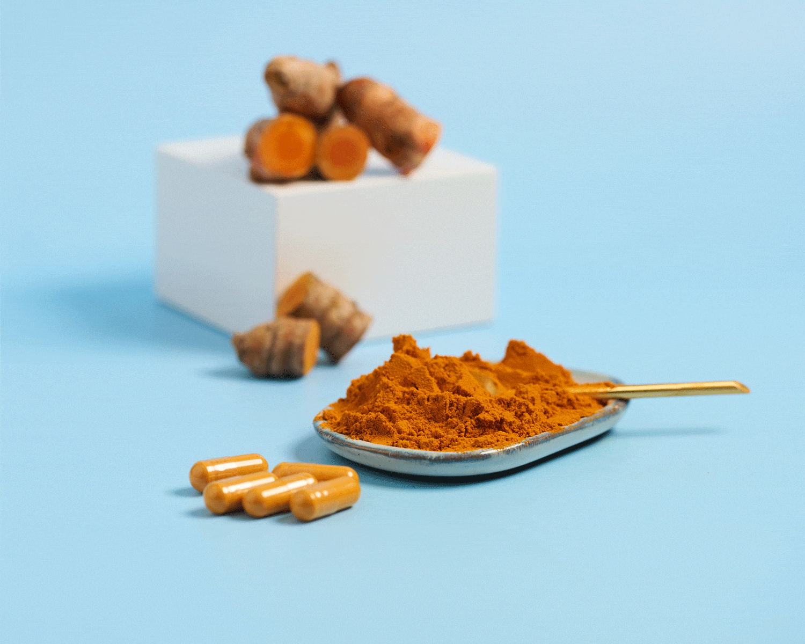
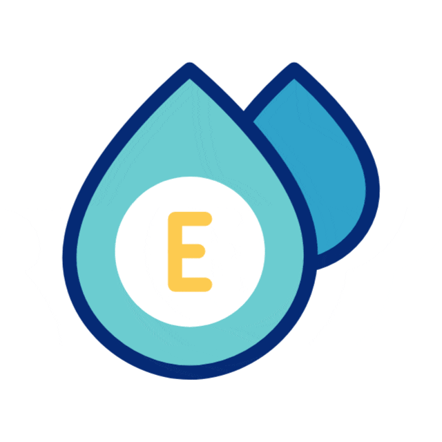

REPRODUCCIÓN DE LA PLANTA Y SU USO
Nuestro proyecto se enfoca en la reproducción y el aprovechamiento del jengibre (Zingiber officinale), una planta conocida por sus propiedades naturales. Además de investigar su cultivo, elaboramos productos como un tónico capilar y shots de jengibre, aprovechando sus beneficios e importancia en la salud y fomentar el uso de productos naturales.
TÓNICO CAPILAR DE JENGIBRE
El tónico capilar fue elaborado utilizando jugo de jengibre natural mezclado con aceite de ricino, vitamina E y una pequeña cantidad de agua para reducir la intensidad del jengibre sobre el cuero cabelludo. Este producto busca fortalecer el cabello, estimular su crecimiento y aportar brillo de manera natural.
SHOT DE JENGIBRE
El shot de jengibre es una bebida natural elaborada con jengibre, cúrcuma, jugo de naranja, pimienta negra y miel. Es un potente concentrado natural que actúa como un antiinflamatorio y antioxidante muy fuerte. Juntos, fortalecen el sistema inmunológico, mejoran la digestión, reducen la hinchazón, alivian dolores musculares y aportan energía de forma natural.
 |
 |
 |
 |
CARRUSEL DE FOTOGRAFÍAS
 2026
2026